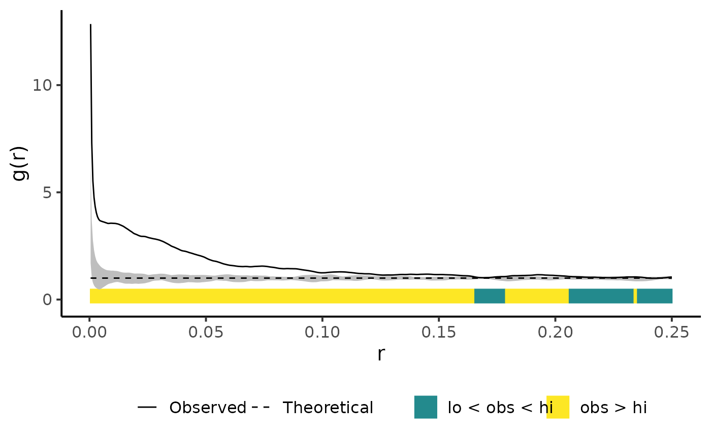

Plot simulation envelopes
Usage
plot_quantums(
input,
labels = NULL,
color_scale = NULL,
legend_position = "bottom",
quantum_position = NULL,
title = NULL,
xlab = NULL,
ylab = NULL,
line_size = 0.5,
base_size = 15,
full_fun = TRUE,
quantum = TRUE,
standarized = FALSE
)Arguments
- input
envelope.
- labels
Name of the labels. See details for more information.
- color_scale
Colors used with labels.
- legend_position
The position of legends ("none", "left", "right", "bottom", "top", or two-element numeric vector)
- quantum_position
Vector with minimum and maximum y value of the quantum bar.
- title
Plot title.
- xlab, ylab
axis labels.
- line_size
Size of the lines.
- base_size
Base font size.
- full_fun
If true observed value and envelope is plotted.
- quantum
If true quantums bars are plotted.
- standarized
If true observed value is standardized. See details for more details.
Details
This functions provides a plotting style for envelope objects of the spatstat
package (for more information please see spatstat.explore::envelope). The location of the
observed value in relation to the simulation envelope of the null model input is
indicated by an additional colour bar at the bottom of the plot. If standarized = TRUE,
all values are standarized by subtracting the theoretical value for CSR
Labels must be a vector including labels for the following three cases. The color
scale vector is used in the same order.
1 = observed > high
2 = low < observed < high
3 = observed < low
To adjust the position of the quantum bar, use quantum_position.
Returns a ggplot object.
References
Esser, D.S., Leveau, J.H.J., Meyer, K.M., Wiegand, K., 2015. Spatial scales of interactions among bacteria and between bacteria and the leaf surface. FEMS Microbiology Ecology 91, 1–13. <https://doi.org/10.1093/femsec/fiu034>
Examples
set.seed(42)
pattern <- spatstat.random::rThomas(kappa = 50, scale = 0.025, mu = 5)
csr_envelope <- spatstat.explore::envelope(pattern, fun = spatstat.explore::pcf, nsim = 19)
#> Generating 19 simulations of CSR ...
#> 1, 2, 3, 4, 5, 6, 7, 8, 9, 10, 11, 12, 13, 14, 15, 16, 17, 18,
#> 19.
#>
#> Done.
plot_quantums(csr_envelope, ylab = "g(r)")
